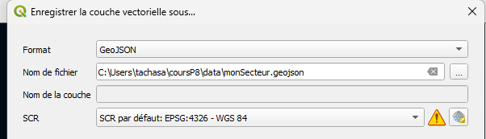
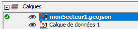
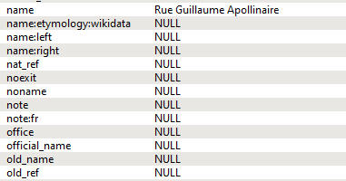
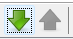
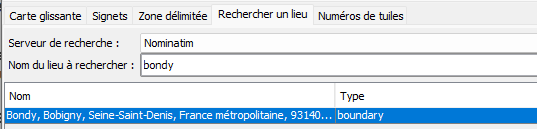
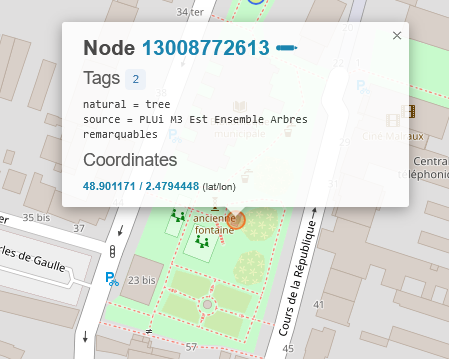
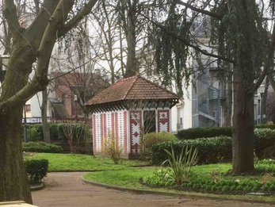
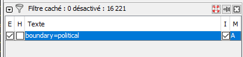
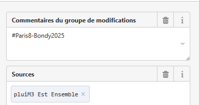

Première session de saisie dans OSM
1 Objectif
Une fois analysée la donnée, il s’agit de la saisir dans OSM.
2 Lister les données
5 Préparer sa donnée sous QGIS pour l’import dans JOSM
3 couches en 4326 et geojson
celle des batiments avec la typo + année min
Le pt adresse avec adresse et typo2
l’enveloppe convexe attribuée
Pour chacune des 3 couches mettre uniquement les tags choisis par les étudiants

Le support présente les deux méthodes dans la procédure Préparer ses couches sous QGIS et encore une fois Simplifier ses couches

6 JOSM : rappel et mise au point
voir ici
6.1 Attributs
Comment appelle-t-on les attributs dans OSM ?
6.1.1 Une multiplication d’attributs
exemple pour les rues

6.1.2 Des erreurs nombreuses
Il n’y a rien de plus difficile que de recopier un texte. building peut devenir Building par exemple.
Observer les attributs, repérer les erreurs d’attributs avec osmose
6.2 Géométries
Quels sont les deux primitives géométriques vues le premier jour ?
A priori, pas de travail sur la géométrie, mais il peut y avoir des opérations à mener sur la géométrie des bâtiments.
Pas de panique, la communauté OSM a produit une osmecum sur les bâtiments.
7 Saisie dans JOSM
7.1 Import d’une zone spécifique
Les deux boutons

Essayer de télécharger :
- l’ensemble de la ville à partir de l’onglet nominatim,

sa zone via une carte glissante,
et enfin à partir du raccourci décrit dans la procédure Importer sa zone
7.2 Pourquoi ne pas importer en masse ?
7.2.1 C’est possible
Le tableau des imports en masse dans OSM
et notamment sur les arbres isolés de St Etienne :
L’exemple d’un projet git sur l’import des arbres dans OSM
7.2.2 Mais ce n’est pas conseillé
voir sur forum des utilisateurs OSM en France
Ponctuellement, on peut essayer, faire la requête overpass sur natural=tree in bondy
Trouver l’erreur dans le square Mitterrand.


Donc il vaut mieux faire un import au cas par cas, surtout que, pour les bâtiments patrimoniaux, le bâtiment existe déjà.
7.3 Facilitateurs
Ces outils qui permettent une saisie plus facile
7.3.1 Filtre
7.3.2 Outil de filtre
Détailler le fonctionnement, voir alterzorg

Il s’agit de travailler uniquement sur les bâtiments.
7.3.3 Colorisation de la donnée
Dans la procédure Importer sa zone, voir le point 3. Colorier sa zone
Que dire d’une extension .mapcss ?*
7.4 Méthode proposée
Voir procédure Saisie JOSM
Attention au commentaire du changeset ! (#Paris8_Bondy2025)

Dans le framacalc, les étudiants mettent le nombre de saisies effectuées et les difficultés rencontrées
Afin de vérifier la saisie, quel tag proposer dans Overpass turbo ?
Voir procédure Utiliser overpass turbo